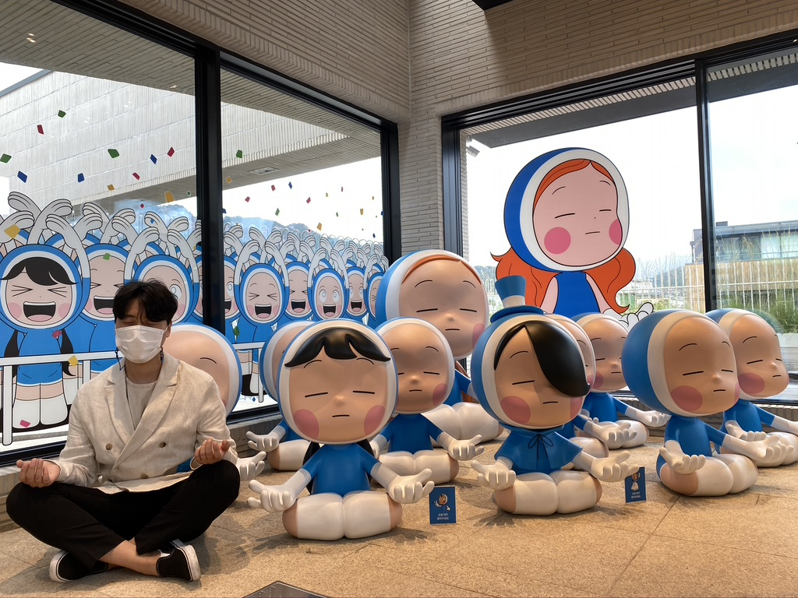
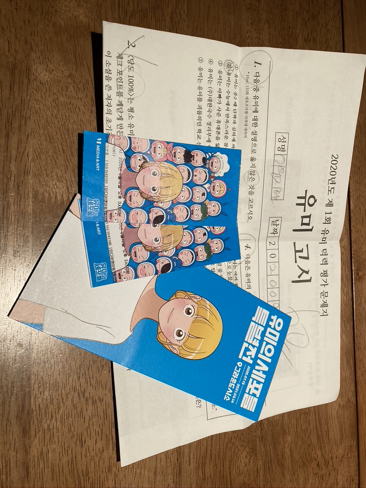

오늘은 이미지 대신 홈페이지 텍스트로 대신하려구 해~
같이 있어도 보고 싶고 떨어지면 더 보고 싶은 윤진아~
내가 취준한다는 이유로 혹시나 힘든 일이 있고 하고 싶은 말이 있지만
참고 있거나 안하는 말이 있는 건 아니지??
만약 있다면 말해줘! 윤진이가 강한 여성이라는 건 알고 있어! 그렇지만
정말 힘든 일이 있거나 하고픈 말을 해야할 때 하는 여성이야말로 강하고 멋진 여성이라고 생각해
무작정 강한 척하고 남들과의 경쟁에서 이기려는 모습은 오히려 약한 모습을 감추려는 안타까운 모습으로 보일 뿐이야
그러니까 윤진이는 더 멋진 여성으로 거듭나길 바래 (난 너무 남성적인 면을 버리고 감성적이란 점이 그렇지만)
무튼 금요일이 되면 다이슨으로 청소기도 돌리고 회도 먹고 매운탕에 밥도 먹고 밤새 놀면서 해외주식도 해보고
루미큐브도 하고 승리호도 보고 해야할거 천지니까 목요일 저녁엔 일찍 자고 금요일 오전엔 커피를 섭취하도록 해
나 또한 그러도록 노력할테니까ㅋㅋㅋㅋㅋ
그리고 내가 너무 윤진이를 보고 싶어하는 티를 안 내서 윤진이가 섭해하는 마음을 가지고 있진 않나 싶은데
난 항상 윤진이 옆에 있고 싶으니까 걱정말아!
그럼 난 곧 있을 윤진이 퇴근 시간에 맞춰서 준비를 해야해서 이만~
사랑해 내사랑~~~~
-윤진와 통화 후 햄버거 사러 나갈 남친-
Date Sillok
우리 만난지
일
- 2020년
- 2021년


2020.11.16 메가쇼부터 북악산 스카이웨이
윤진 연차 때 일산 킨텍스에 있는 메가쇼를 보러 갔다.
얄구진 것이 가득하다는 말에 한껏 기대를 하고 갔는데 생각보다 아이디어 상품이 없어서 당황했다.
오히려 아이디어 상품보다는 먹거리가 엄청 많았다.
거기서 청어알젓갈을 구매하고는 바로 나왔다. (청어알존맛탱 올해의 잇템)
킨텍스에서 나와서는 남자들이 여자 꼬실 때 간다는 북악스카이웨이를 갔다. (물론 윤진이가 운전했다)
주차장이 가득차서 꽤나 기다렸는데 생각보다 빨리 빠져서 구경을 할 수 있었다.
미세먼지가 많아서 서울 시내를 볼 순 없었지만 윤진이와 함께 처음 방문해서 좋았다.
그리고 집에 와서 수육을 해서 먹었는데 정말 맛있었다!!!
얄구진 것이 가득하다는 말에 한껏 기대를 하고 갔는데 생각보다 아이디어 상품이 없어서 당황했다.
오히려 아이디어 상품보다는 먹거리가 엄청 많았다.
거기서 청어알젓갈을 구매하고는 바로 나왔다. (청어알존맛탱 올해의 잇템)
킨텍스에서 나와서는 남자들이 여자 꼬실 때 간다는 북악스카이웨이를 갔다. (물론 윤진이가 운전했다)
주차장이 가득차서 꽤나 기다렸는데 생각보다 빨리 빠져서 구경을 할 수 있었다.
미세먼지가 많아서 서울 시내를 볼 순 없었지만 윤진이와 함께 처음 방문해서 좋았다.
그리고 집에 와서 수육을 해서 먹었는데 정말 맛있었다!!!
2020.09.13 유미의 세포들 전시회, 그리고 사격


- 
- 
네이버 인기 웹툰 '유미의 세포들' 전시회를 보러 갔다.
이것 때문에 유미의 세포들을 미리 선결제해서 다 보고 말았다.
한층 한층마다 지금의 유미까지 성장하는 스토리를 담아놨는데
윤진이는 바비가 전시된 곳에서 있는 힘껏 샌드백을 쳤다. (물론 욕도 하면서...)
그리고 세포 테스트를 했는데 윤진이는 응큼세포가 나왔다 🥴🥴🥴🥴
전시회를 다 보고 나선 사격을 하러 갔는데...
윤진이의 스나이퍼 실력이 어마무시했다!!!
그 동안 배그로 실력을 갈고 닦아왔나보다.
이것 때문에 유미의 세포들을 미리 선결제해서 다 보고 말았다.
한층 한층마다 지금의 유미까지 성장하는 스토리를 담아놨는데
윤진이는 바비가 전시된 곳에서 있는 힘껏 샌드백을 쳤다. (물론 욕도 하면서...)
그리고 세포 테스트를 했는데 윤진이는 응큼세포가 나왔다 🥴🥴🥴🥴
전시회를 다 보고 나선 사격을 하러 갔는데...
윤진이의 스나이퍼 실력이 어마무시했다!!!
그 동안 배그로 실력을 갈고 닦아왔나보다.